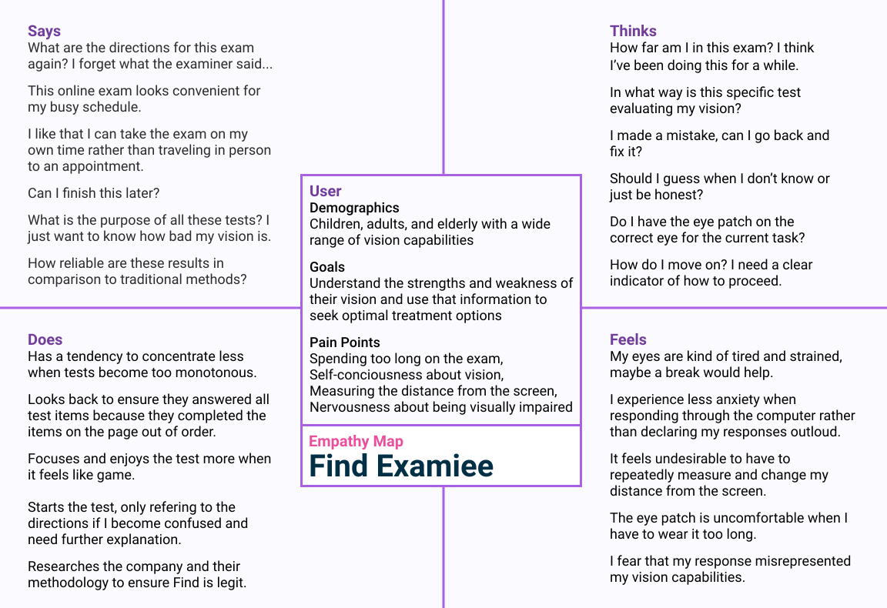
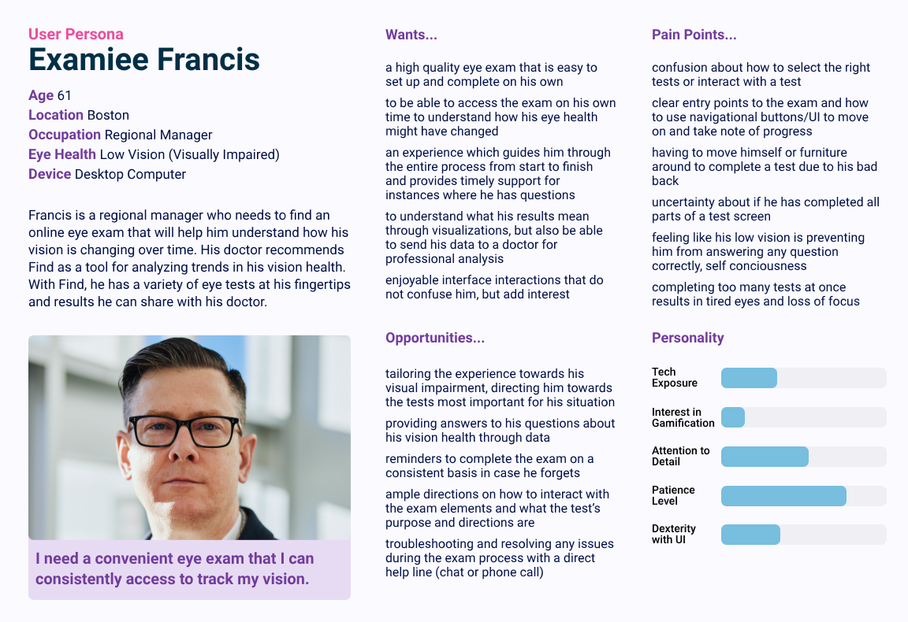
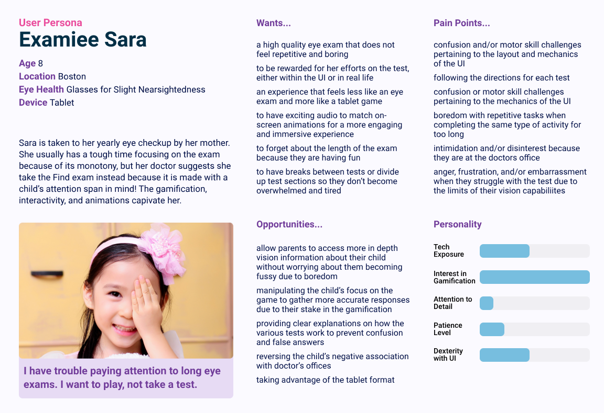
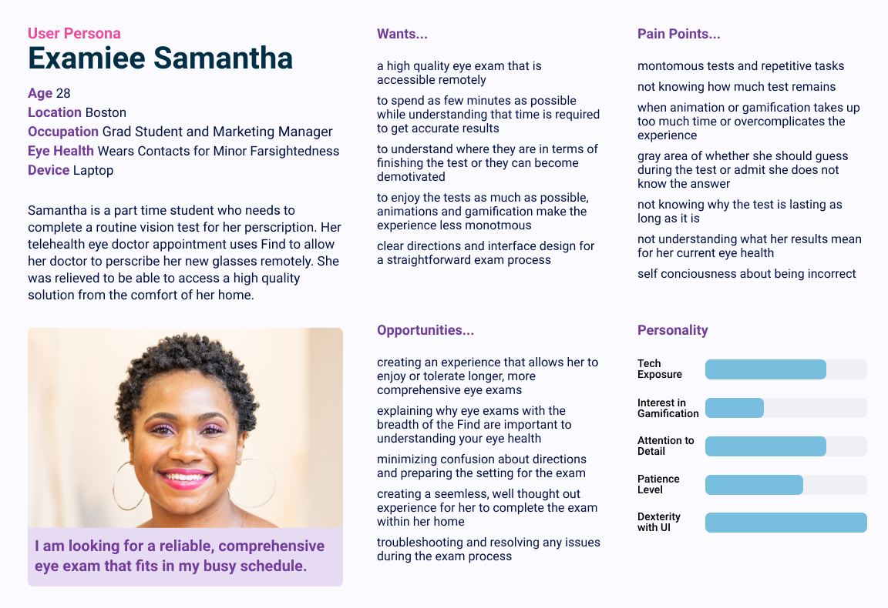

UX Design - Journey Mapping
PerZeption
PerZeption offers rapid, self-administrable, and AI-guided vision diagnostics. The results gained via their products have a higher diagnostic resolution than conventional products currently available on the market.
This senior design project, completed in collaboration with a team of four student designers, centers around building a website that presents PerZeption as a company and identifies their eye exam products for potential investors and healthcare based customers.

Natural Observation for Empathic Design
A major part of our user research was natural observation of beta testing sessions of PerZeption’s Find exam at Northeastern’s psychology lab. As our team's user experience researcher, I attended beta testing sessions to assess how participants responded to and navigated the exam’s current MatLab based UI and the overall structure of the exam.
While the observed studies were confined to college aged students, the research allowed us to empathize with the user experience and see how PerZeption will change vision testing for the better. These learnings informed our design of the webpage and brand by giving us a image for the users and mission we were designing for.
With these observations in mind, as well as Charles’ personal experience taking the complete 2-3 hour test, we combined our major takeaways into an empathy map...
Empathy Map
Crafting User Personas
Form the more general starting point of the empathy map, I developed three unique personas that embody the desparate use cases and concerns of the user base.
Each persona embodies a different set of key differences in our user population:
at-home vs in-office scenarios
consistent vision testing needs vs annual checkups
visual impairment vs those without impairment
children vs adults
User Personas
Sara
Samantha
Gigamap
Gigamap